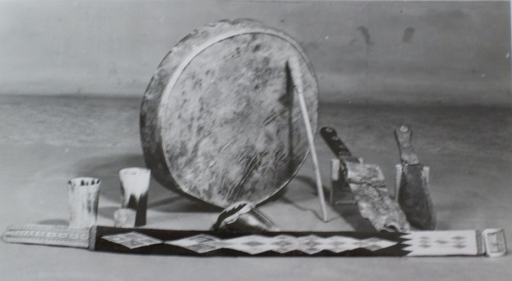

Early Customs
By Peter PeeAce and Billy Poorman
 |
|
Saskatchewan Archives Board S-B6777 Atimoyoo, A Cree man armed with a lever action repeating rifle
|
At one time the existence of the Indian depended on hunting, fishing, and trapping. Those who had remembered the buffalo hunts, felt the buffalo should only have been killed as needed. The beaver was another animal that the Indians were concerned about as this animal controlled the water levels, which meant survival for many species of animals. Wild fowl was plentiful. These were a source of food.
Feathers of the birds were used in the tribal headdress. The feet were sometimes dried and used in necklaces. Big game provided food. Hides of these animals were tanned and made into garments and other items. At first the garments were fringed, making for an effective trim. As beads became available, trim was of this medium. The women were very skillful in making colorful designs, all of which were original. Skins had other uses also.
|  |
|
Saskatchewan Archives Board S-B-353 Image of drum, buffalo knives, drinking cups, and |
Food was not wasted. Fish would be dried or smoked. Meat made up into “pemmican” a means of preserving meat which the whiteman has adopted for use. Pemmican meat cut finely, dried, then pounded to a very fine powder. It could be stored in hide pouches or be made into cake form. Pemmican wouls sometimes be mixed with berries. Snowshoes were often used in the winter “running” traplines. Preparation of skins of animals for tanning of all the pelts meant the scraping off all the fatty tissue possible and stretching. Prices for pelts depended on cleanliness, well stretched skins, as well as size and quality of fur.